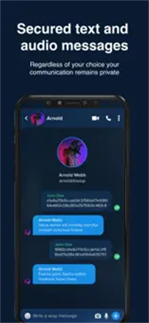
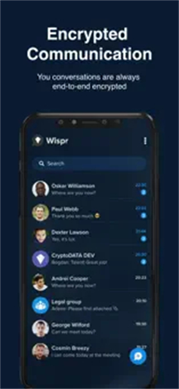

wispr版本进化史：一款端到端加密通讯应用的迭代逻辑
wispr从发布到v1.3.3的版本演进，看懂团队在安全与体验之间的取舍，以及每一次功能变更背后的优先级判断。
现状：v1.3.3 之后的 wispr
如果现在打开 wispr官网，能看到的是一款主打端到端加密的即时通讯应用——消息、通话、文件传输全程加密，默认为 P2P 直连架构，还额外加了一层区块链会话验证。防截屏功能在 v1.3.3 修复了一批机型上的失效问题，Matrix ID 匿名身份体系也已经跑了一段时间，整个产品看起来该有的安全承诺都齐了。
但如果你回溯它的迭代日志，会发现这款产品的成长路径和主流通讯应用不太一样。它从第一天起就没打算走"先做 IM 功能、再补安全"的路线，而是反过来——安全架构先定死了，然后在这个框架里一点点往里面填功能。

来路：从加密框架到完整产品
wispr 的核心加密框架叫 VOBP（Voice Over Blockchain Protocol），这个名字在最早的版本里就出现了。它不是单一的加密算法，而是三层组合：加密层负责端到端加密、传输层默认 P2P 直连、信任层用区块链锚定会话元数据。这个架构从一开始就是定死的，后面所有功能开发都围着它转。
加密优先的起步阶段
早期版本的 wispr 功能非常克制——文字消息、语音消息、语音通话这几个基础通讯能力先做出来，每一项都强制套上 VOBP 的加密管道。下载获取安装包后，wispr的注册环节也很独特，除了常规的手机号/邮箱注册，还提供了 Matrix ID 这条完全不绑定个人信息的身份路径，只不过后者需要每年 49 美元的订阅费。
从迭代节奏来看，wispr 在最初几个版本里几乎没有做什么"新功能"，主要是在补 VOBP 的边界情况处理——弱网环境下 P2P 直连失败自动回落中继节点、中继节点只转发密文不解密、消息级密钥轮换每条独立。这些都是用户感知不到的底层工作，但团队花了好几个版本才把这块补完整。
v1.2 前后：体验问题开始暴露
安全架构站稳之后，体验层面的问题逐渐浮出水面。首联"必须接受才能开聊"就是一个典型例子——很多新用户第一次用 wispr 看到"联系请求"弹框时，以为是好友验证，甚至因为不懂而放弃。技术上这是 P2P 公钥交换的必然要求，但用户不关心这个。
wispr 的处理方式很有代表性：它没有妥协改成自动密钥交换，而是选择在 wispr文档 里用大量篇幅解释为什么需要这一步、它和好友验证有什么本质区别。产品功能没动，但教育成本转嫁给了用户和文档。

v1.3.3：防截屏修复的信号
v1.3.3 在 2026 年 9 月的更新日志里只写了一句话——"修复部分机型防截屏功能失效 bug"。但这条更新其实暴露了 wispr 安全承诺的一个边界：App 级的防截屏本质上是降低风险，不是绝对防护。安卓厂商的定制系统可能会忽略 FLAG_SECURE 标志，root 设备上特权应用可以绕过，iOS 上系统层面根本不让 App 禁止截屏。
wispr 没有因此放弃防截屏功能，也没有过度承诺"绝对安全"——它做的是修 bug，然后在文档里坦诚地列出哪些场景可能失效、有哪些替代方案可选。这个姿态很 wispr：安全承诺不变，但不吹牛皮。
规律：迭代节奏里的优先级
把这几个版本的变更放在一起看，团队的优先级判断其实非常清晰。
他们一直在死磕的事情只有一件——把"服务端看不到任何内容"这件事做扎实。VOBP 的三层设计围绕这个目标，Matrix ID 身份层围绕这个目标，防截屏围绕这个目标，连首联"必须接受"这个反直觉的设计也是为了不让公钥经过服务器中转。只要有任何环节可能让服务端看到明文或元数据，团队就会优先去堵这个口子。
但有两件事他们似乎一直不太在意。
第一是开源透明度。VOBP 协议是闭源的，不像 Signal Protocol 那样经过第三方公开审计。wispr 官方对此的解释是区块链信任层已经弥补了闭源的安全短板——会话元数据上链可以防止中间人攻击。但这和"代码完全透明可审计"是两回事。
第二是用户体验的打磨。首联接受机制的困惑没有被产品层面解决，只是文档解释得更细了。防截屏在某些厂商 ROM 上的不稳定性也没有做针对性适配，而是建议用户用阅后即焚和一次性查看做替代。
这两件事不是 wispr 做不到，而是它选择了优先级——安全承诺的刚性优先于体验的柔性。
预判：照这个路线，下一步大概率是什么
从迭代规律推，wispr 接下来的走向可能有三个方向。
第一个方向是补强 VOBP 协议的公开审计。闭源一直是 wispr 安全承诺里最容易被质疑的一点，如果能把加密层的实现代码公开并拿到第三方审计报告，对它的信任锚定是实质性的加分。
第二个方向是弱网中继场景的体验优化。P2P 直连在严格的企业网络、教育网环境下成功率不高，自动回落到中继后虽然加密仍然安全，但延迟会上去。团队可能会在中继节点的分布和调度上做优化。
第三个方向是功能层面的克制扩展。wispr 到现在都没有做朋友圈、群文件共享、频道这些主流 IM 功能，这不是做不出来，而是这些功能很难在"服务端看不到任何内容"的框架下实现。如果团队选择扩展功能，要么牺牲一部分安全承诺，要么在架构上做更大胆的创新。但从目前的迭代节奏来看，短期可能性不大。
写在最后
wispr 不是一款适合所有人的通讯应用。它的 P2P 架构和区块链信任锚点听起来很硬核，但闭源和反直觉的交互让它在大众市场很难普及。不过如果你的通讯场景确实需要最高级别的加密保护，它可能是目前市面上少数几款真正把"服务端看不到任何内容"这件事做死的产品之一。相关资料我在 GitHub、Gitee 和 GitCode 三个仓库都同步了，国内外访问各有各的便利。